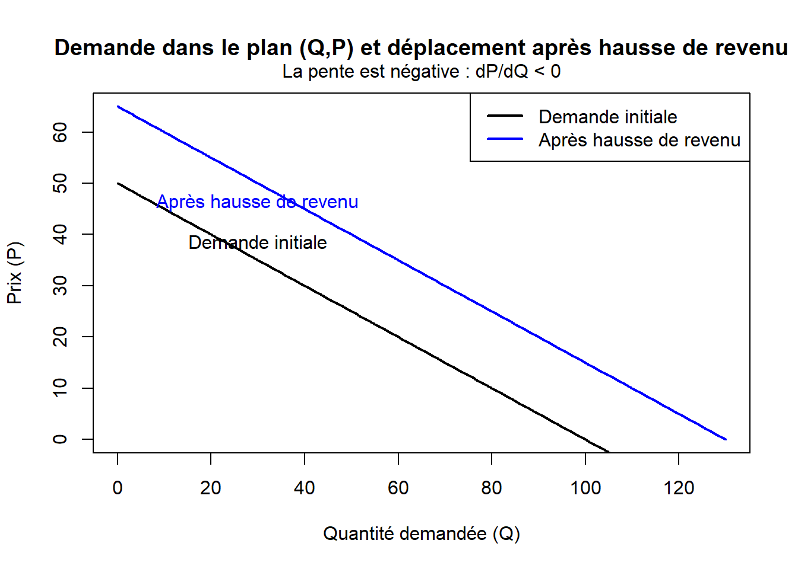

Show the code
# Paramètres
a_initial <- 100
b <- 2
a_income_rise <- 130
# Plage de quantités Q
Q <- seq(0, a_income_rise, by = 1)
# Inversion de la fonction de demande pour P = f(Q)
P_initial <- (a_initial - Q) / b
P_shifted <- (a_income_rise - Q) / b
# Tracé dans le plan (Q,P)
plot(
Q, P_initial,
type = "l", lwd = 2,
xlab = "Quantité demandée (Q)",
ylab = "Prix (P)",
main = "Demande dans le plan (Q,P) et déplacement après hausse de revenu",
ylim = c(0, max(P_initial, P_shifted))
)
lines(Q, P_shifted, col = "blue", lwd = 2)
text(30, (a_initial - 30)/b, "Demande initiale", pos = 3)
text(30, (a_income_rise - 30)/b, "Après hausse de revenu", pos = 1, col = "blue")
# Mention explicite de la pente négative
mtext("La pente est négative : dP/dQ < 0", side = 3, line = 0.5)
legend(
"topright",
legend = c("Demande initiale", "Après hausse de revenu"),
col = c("black", "blue"),
lwd = 2
)